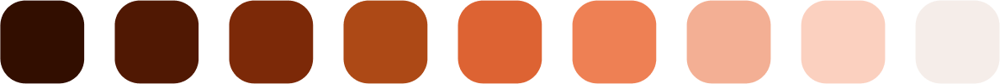
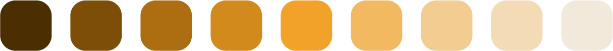

Space Travel
A UI Design case study assignment from the Master in Digital Experiences Design, at Bau Design College.
My role
UI designer
Problem definition
Travel is a fictional space-traveling agency specialized in trips to the red planet, Mars. The company needed a landing page to advertise its services and acquire leads for their trips.
This project was an exercise that was focused on putting UI best practices into work, which is why there is no prior research as the task was focused on visual design process.
Objective
A case study to put visual design best practices and processes into work, by creating the UI of a landing page.
Users
Millionaires with a taste for exclusive and extraordinary adventures.
Wireframing
Step one before starting the lo-fi wireframing was to review the content, in order to prioritize it during the design process. Putting content first allowed me to adapt the structure to the content to see what worked or not. Knowing what elements and texts needed to be included in the UI was a helpful creative constraint when testing different types of landing page structures. After doing some sketches I developed the high-fi wireframes in Miro in order to add the texts and more details. The objective was to test different user flows while still maintain the focus on the content, usability, and structure.
Takeaways
- Prioritize content, functionality and structure, not visual details
- Identify potential usability and interaction problems
- Ask for feedback. Does the lo-fi wireframe make sense? Do the transmit the right concept?
Typography
The typography was selected to be aligned with the objective and represent the personality of the brand . The idea was therefore to find typefaces that were modern with an exclusive and futuristic look, in order to transmit the disruptive and innovative essence of the brand.
Bai Jamjuree and Promt from Cadson Demak caught my attention as they are typographies inspired by Eurostyle and other more square typographies such as Microgramma. These typefaces have futuristic connotations due to their slight square shape which gives a techy look.
I choose Promt for the paragraphs due to its simplicity, legibility and readability. The letters of Promt breathe more by having more negative space than Bai Jamjuree, which makes the lengthier texts easier to scan and read. While Bai Jamjuree was specifically created for headlines or short paragraphs due to its more condensed letters. This is made clear when testing the legibility, especially on smaller screens.
Type Scale
Takeaways
- Use typography to transmit the personality and concept of the brand
- Focus on readability and legibility - Users don't read texts, they scan them
- Adpat the fonts to the functionality of the content, such as titles and paragraphs
Colors
The color palettes were inspired by the planet Mars itself and its red-orange colors in contrast to the black space. This resulted in an analog color palette with three different hues.
Primary color
Accent color
Neutral color

The red-orange color was selected as the primary palette, to be used most frequently in the components across the interface. The dark yellow palette was created as a secondary color, to work as an accent color, and to capture the gradient of earthy tones on the surface of Mars.
A neutral palette was created with grey-scale variants, to complement the more vivid primary and secondary colors.
I used a contrast checker to make sure that the color combinations were accessible and AA compliant.
Takeaways
- Strive for color harmony with color schemes
- Don't forget about contrast and acessability
- Balance the composition by selecting a primary, secondary and neutral color